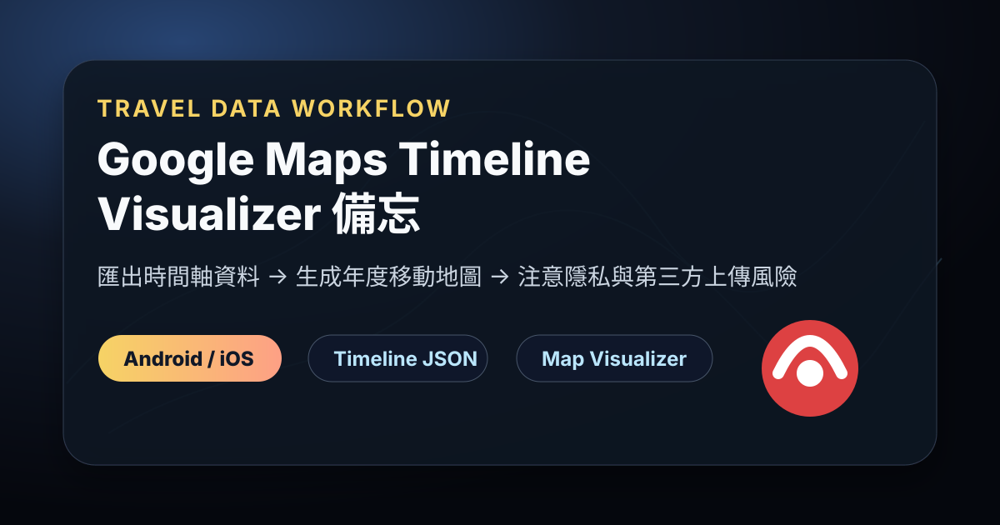

Threads｜tedzted：Google Maps Timeline Visualizer 年度移動地圖與匯出教學

一句話摘要
這則 Threads 分享的是一個實用的個人移動資料視覺化工作流：從 Google Maps 匯出 Timeline / 時間軸資料，再用 Timeline Visualizer 類工具生成年度移動地圖，快速回顧一年內去過哪些地方、飛了幾趟、常見移動路線是什麼。
來源脈絡
- Threads 作者：tedzted（@tedzted）。
- 貼文案例：作者用 Google Map Timeline Visualizer 回看過去 365 天移動紀錄，發現一年內飛了 90 次，台港來回頻率極高。
- 貼文重點：不是單純曬旅行，而是提供 Google Maps Timeline 資料匯出路徑，讓使用者自己生成移動軌跡視覺化。
匯出方法：Android
- 開啟裝置的「設定」App。
- 依序點選「位置」>「定位服務」>「時間軸」。
- 點選「匯出時間軸資料」。
- 取得匯出檔後，再搜尋或使用 Timeline Visualizer 類工具生成圖表。
匯出方法：iPhone / iPad
- 開啟 Google 地圖 App。
- 點選右上角的帳戶個人資料相片。
- 點選「設定」>「個人內容」。
- 向下滑至「位置資訊設定」。
- 點選「匯出時間軸資料」。
- 取得匯出檔後，再搜尋或使用 Timeline Visualizer 類工具生成圖表。
可以拿來做什麼
- 年度旅行回顧：整理一年去過的城市、國家、航線與交通模式。
- 生活紀錄：回看通勤圈、常去地點、移動半徑。
- 旅遊內容素材：生成「一年旅行地圖」或「城市軌跡圖」作為社群素材。
- 個人時間管理：觀察高頻往返路線，評估交通成本與行程節奏。
- 公司／自由工作者出差盤點：粗略回顧跨城市往返密度與差旅負擔。
隱私與安全提醒
Google Maps Timeline 匯出資料屬於高度敏感個資，可能包含住家、工作地點、常去場所、旅行日期與完整移動軌跡。使用任何第三方 Timeline Visualizer 前，建議先確認：
- 是否可在本機瀏覽器離線處理，不把原始檔上傳到伺服器。
- 網站是否明確說明不留存、不分析、不轉售位置資料。
- 匯出檔是否可先複製一份、刪除不想分享的日期區段後再使用。
- 生成圖片若要公開分享，是否已遮掉住家、學校、公司等敏感位置。
- 使用完畢後，從下載資料夾與雲端同步資料夾刪除原始匯出檔。
對知識庫的保存價值
這是「個人資料可視化」很好的生活案例：同一份 Google Maps 位置資料，可以從背景紀錄變成年度旅遊圖、移動分析與回顧素材。不過它也提醒我們，越有趣的視覺化通常越依賴敏感資料；保存這個工作流時，隱私檢查要和操作步驟一起保存。
原始連結
Threads：
https://www.threads.com/@tedzted/post/DcQ_DMEDOpc
Threads share：
https://www.threads.com/share/BAaaa9__3h/
Google Maps 時間軸說明：